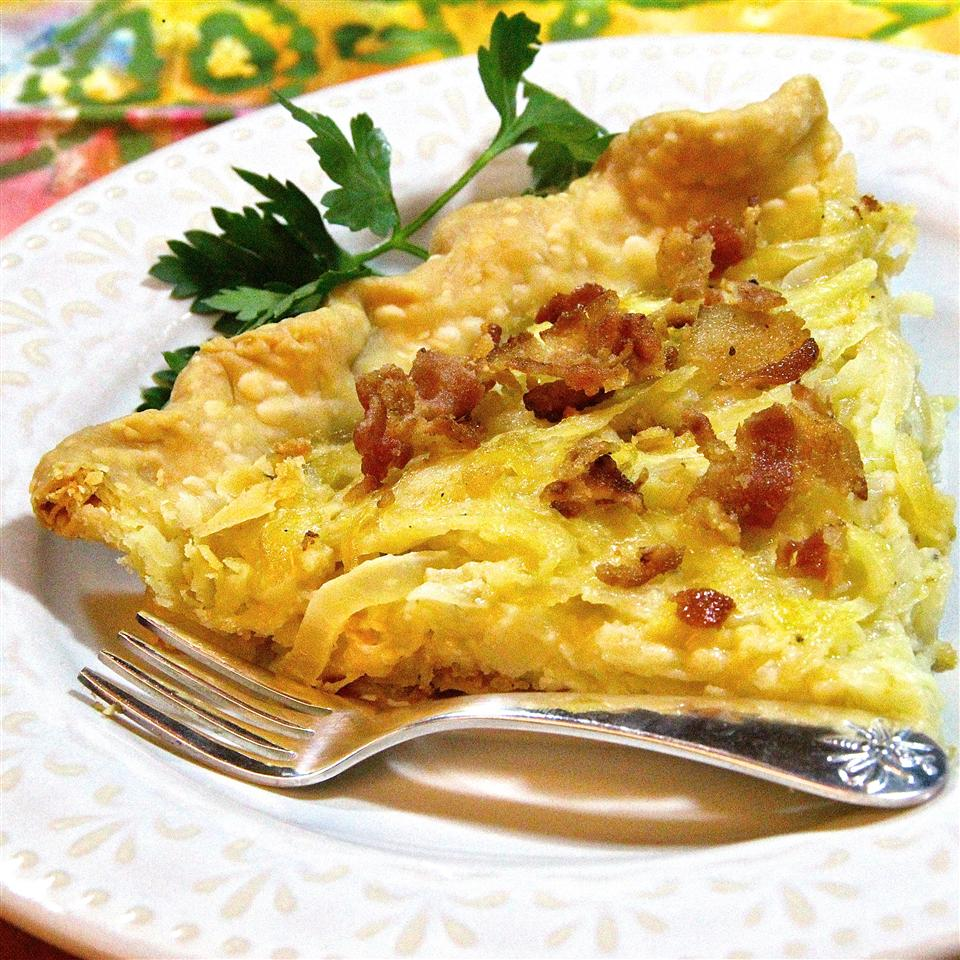

Onion Tart

A simple tart made with onions.
Ingredients
- ¼ cup butter
- 1 ½ pounds onions, sliced
- 2 eggs, beaten
- 1 (9 inch) pie crust, baked
- 4 slices bacon
Directions
- Preheat oven to 350 degrees F (175 degrees C).
- In a large skillet, melt butter and saute onions until soft. Remove from heat. Place bacon in a large, deep skillet. Cook over medium high heat until evenly brown. Drain, crumble and set aside.
- Mix in eggs.
- Pour into prepared shell and bake at 350 degrees F (175 degrees C) for approximately 20 minutes. Top with bacon, Can be served warm or cold.